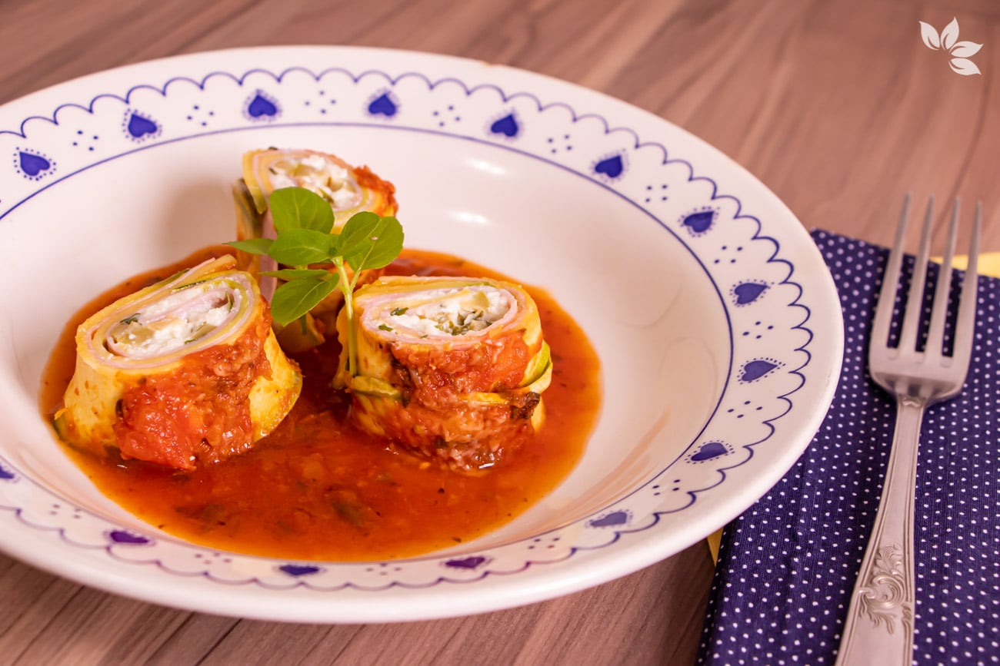
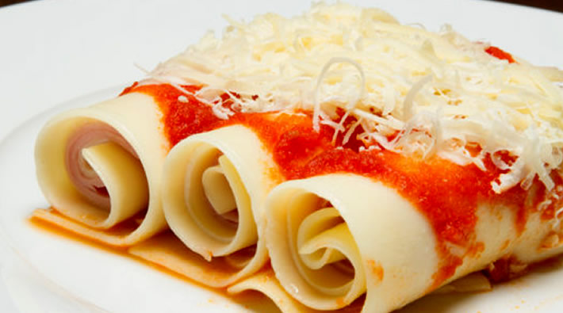

Receita de Canelone: Para o Almoço De Domingo

Ingredientes
- 1 pacote de massa pronta para canelone
- 2 lata de molho pronto de tomate
- 500 g de mussarela fatiada
- 500 g de presunto fatiado
- 100 g de queijo ralado
- 1 colher (sopa) de óleo
- 1 xícara (chá) de água
- sal, pimenta e cebola picadinha a gosto

Modo de Preparo
Em uma panela, adicione o óleo e leve ao fogo, adicione a cebola e refogue bem.
Adicione o molho de tomate e a pimenta.
Adicione o molho de tomate e a pimenta.
Acrescente a água e acerte o sal a gosto, deixe no fogo até ferver.
Pegue um refratário e unte o fundo com manteiga, despeje a metade do molho e reserve.
Pegue uma fatia de massa, por cima coloque uma fatia de presunto e uma de mussarela, enrole o canelone e coloque no refratário reservado.
Repita o mesmo processo até acabar a massa.
Por cima, adicione o restante do molho, salpique o queijo ralado e leve para gratinar por cerca de 40 minutos em forno médio.
Informações Adicionais:
A massa do canelone se encontra em supermercados. Muitas pessoas utilizam a massa de pastel para fazer canelone. Use o molho de sua preferência.